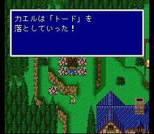

이스토리
맵의 최서단에 있는 마을입니다. 스토리와는 별 상관이 없는 마을이지만 여러 가지로 들를 필요가 많습니다. 게다가 제3세계에서는 없어지기 때문에..
일단 근처 평원에서는 블랙플레임이라는 적이 등장하는데, 두 놈이 스톤고렘과 함께 나올 때가 있고 다섯 놈이 떼거지로 나올 때도 있으며 어느 쪽이든간에 돈과 경험치가 짭잘합니다. 특히 돈벌기 위해서라면 제1세계에서 최적이라고 할 수 있습니다. 게다가 이 놈은 검은 충격이라는 청마법을 쓰는데 반드시 배워두어야 하는 마법입니다.
마을은 흥겨운 음악이(Harvest) 울리는 평화로운 분위기로 목축을 하고 있는 듯 합니다. 일단 흑마법 토드를 얻으세요. 화단을 한 바퀴 돌면 됩니다. 또 라무에 대한 정보도 나오고, 북쪽 목축장에서 양에게 걷어차인 후 길을 잘 찾아가셔서 음유시인이 사용할 수 있는 '사랑의 노래'를 얻으세요.

방어구상에는 강력한 장신구들이 있는데 무지하게 비쌉니다. 돈이 남아돌면 사시든가, 꼭 얻고 싶으시면 블랙플레임 노가다, 혹은 배틀액스를 이용한 돈 무한증식이라도 해서 구하시면 되겠지만 좀 지겨우실 듯.. 효과는 확실합니다만..
도구상: 포션, 해독제, 안약, 여인의 키스, 도깨비방망이, 금바늘, 피닉스의 꼬리깃,
텐트
방어구상: 화염의 반지, 산호의 반지, 천사의 반지
마법상: 시공마법
레벨1~3(스피드, 레비테트, 텔레포 제외)
마을 동쪽에 있는 숲에서는 라무가 등장합니다. 이기면 소환수 라무를 얻으며 아이템란에서 사용해야 익혀집니다. 그리고 이 숲에서는 미니드래곤이라는 몬스터가 떼거지로 나옵니다. 경험치에는 이놈들이 직빵입니다. 한 마리당 900을 주니.. 다만 상대하기 그리 녹록한 녀석들은 아닙니다. 가급적 전체공격 수단(인술 던지기나 타이탄 등을 추천)을 써서 한꺼번에 보내세요.